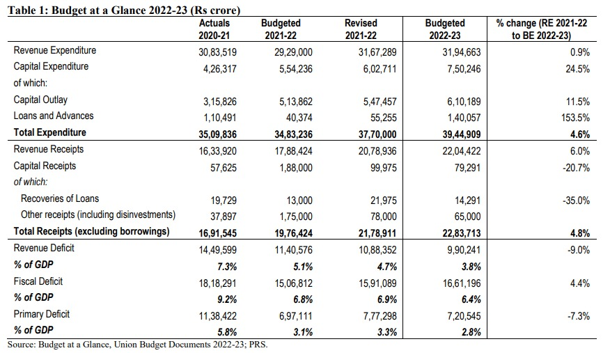

Union Budget 2022-23 Analysis
Budget Highlights
Expenditure: The government proposes to spend Rs 39,44,909 crore in 2022-23, which is an increase of 4.6% over
the revised estimate of 2021-22. In 2021-22, total expenditure is estimated to be 8.2% higher than budget estimate.
▪ Receipts: The receipts (other than borrowings) in 2022-23 are expected to be to Rs 22,83,713 crore, an increase of
4.8% over revised estimate of 2021-22. In 2021-22, total receipts (other than borrowings) are estimated to be 10.2%
higher than the budget estimates.
▪ GDP: The government has estimated a nominal GDP growth rate of 11.1% in 2022-23 (i.e., real growth plus inflation)
.
▪ Deficits: Revenue deficit in 2022-23 is targeted at 3.8% of GDP, which is lower than the revised estimate of 4.7% in.
2021-22. Fiscal deficit in 2022-23 is targeted at 6.4% of GDP, lower than the revised estimate of 6.9% of GDP in 2021-22
22 (marginally higher than the budget estimate of 6.8% of GDP). Interest expenditure at Rs 9,40,651 crore is estimated
to be 43% of revenue receipts.
▪ Extra Budgetary Resources (EBR): After a number of years, the budget has not relied on EBR or loans from National
Small Savings Fund.
▪ Ministry allocations: Among the top 13 ministries with the highest allocations, in 2022-23, the highest percentage
increase in allocation is observed in the Ministry of Communications (93%), followed by the Ministry of Road Transport
and Highways (52%), and the Ministry of Jal Shakti (25%).
